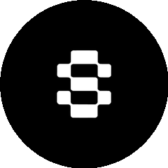
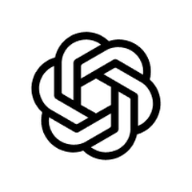

100m80m60m40m20m
第 28 周
06.29 — 07.06 · GitHub 周榜
13
个涨星最猛的项目
+10,338
最高单周涨星
5
大领域分组
| 00| 25| 50| 75| 99
AI Agent 工具组
本周最猛的领域 · 4 个项目

usestrix / strix
AI 帮你挖出安全漏洞
+10,338
本周涨星
AI Agent 工具组

ogulcancelik / herdr
终端里同时管多个 AI
+3,937
本周涨星

stablyai / orca
多 Agent 并行干活
+3,783
本周涨星

openai / codex-plugin-cc
两家 AI 协同写代码
+3,405
本周涨星
100m80m60m40m20m
AI 开发记忆组
让 AI 记住整个代码库 · 2 个项目

DeusData / codebase-memory-mcp
代码库索引成知识图谱
+7,945
本周涨星
AI 开发记忆组
DeusData / codebase-memory-mcp
代码库索引成图 · 省 9 成 token
+7,945
本周涨星

topoteretes / cognee
给 AI 装长期记忆
+2,699
本周涨星
视频图像组
AI 做视频 / 3D · 3 个项目

calesthio / OpenMontage
500+ 技能自动剪视频
+7,353
本周涨星
视频图像组

browser-use / video-use
写代码的方式剪视频
+4,288
本周涨星
Robbyant / lingbot-map
数据流重建 3D 场景
+1,875
本周涨星
AI 入口和网页组
一个口接通所有 AI · 3 个项目

diegosouzapw / OmniRoute
一个端点对接 231+ 供应商
+4,411
本周涨星
AI 入口和网页组

alibaba / page-agent
说话就能操作网页
+3,151
本周涨星

JCodesMore / ai-website-cloner
一键克隆任意网站
+3,246
本周涨星
安全隐私和效率组
不留痕迹 · 全程本地 · 2 个项目

simplex-chat / simplex-chat
不留任何身份的聊天网络
+3,572
本周涨星
安全隐私和效率组
simplex-chat / simplex-chat
无身份标识的聊天网络
+3,572
本周涨星

Zackriya-Solutions / meetily
本地开会自动记笔记
+2,972
本周涨星
100m80m60m40m20m
第 28 周周榜
就 到 这
13 个项目，想试哪个
关注 GitHub 星探
下 周 见